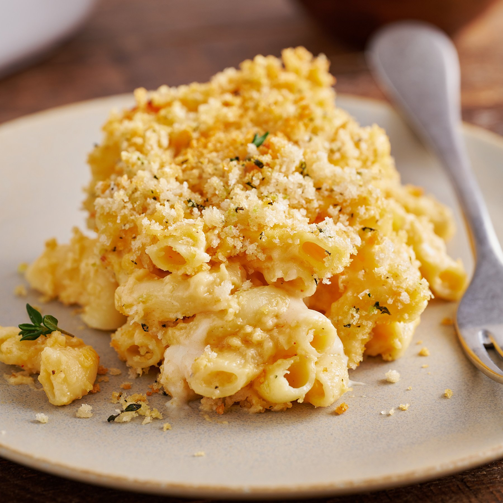

Baked Mac and Cheese

Description
Description of the dish
Ingredients
- 1 pound elbow macaroni
- 6 tablespoons unsalted butter
- 1/3 cup flour
- 3 cups milk
- 4 cups sharp cheddar cheese
- Breadcrumbs
Steps
- Preheat oven to 350 degrees.
- Cook the pasta one minute shy of al dente.
- Drain the pasta.
- Place pasta in large bowl.
- Toss the pasta with olive oil.
- Melt butter in sauce pan.
- Whisk in flour over medium heat and continue whisking until golden brown.
- Whisk in flour over medium heat and continue whisking for about 1 minute until bubbly and golden.
- Gradually whisk in the milk and heavy cream until nice and smooth.
- Continue whisking until you see bubbles on the surface and then continue cooking and whisking for another 2 minutes.
- Whisk in salt and pepper.
- Add two cups of shredded cheese and whisk until smooth.
- Add another two cups of shredded cheese and continue whisking until creamy and smooth.
- Sauce should be nice and thick.
- Stir in the cooled pasta until combined and pasta is fully coated with the cheese sauce.
- Pour half of the mac and cheese into the prepared baking dish.
- Top with remaining 2 cups of shredded cheese and then the remaining mac and cheese.
- In a small bowl, combine panko crumbs, Parmesan cheese, melted butter and paprika.
- Sprinkle over the top and bake until bubbly and golden brown, about 30 minutes.
- Serve immediately.